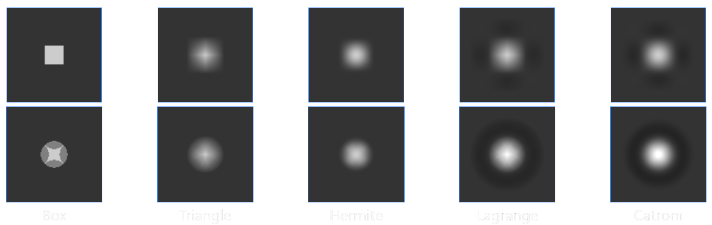

Some of you may be familiar with the blog post I made about mpv's scaling filters a while ago, but it was never really meant to be shared as much as it did. That page was originally the result of an assignment that I had during my undergrad, when I was formally studying digital image processing for the first time. Naturally, it was full of mistakes and the results weren't particularly scientific. I got a lot of feedback and the page ended up evolving in an organic way, but it still has some fundamental issues that can not be fixed without a major change in the methodology.
From the top of my head I can enumerate the following problems:
So, to address these issues:
With that out of the way, we can proceed with the real introduction.
Resampling is the process of changing the number of samples of a discrete signal to obtain a new discrete representation of the underlying continuous signal. This definition comes from the idea of having a sensor of some kind producing an analog continuous-time voltage/current variance which is then periodically sampled and quantised into predefined amplitude levels so we can store it in bits/bytes.
The easiest and most classic way of resampling to a higher sample rate is via linear interpolation, if you want to find a value between two points you can simply draw a line between them. Linear interpolation can be done in a cartesian plane, through both axis, creating what we call "bilinear" interpolation. Bilinear interpolation is the simplest interpolation algorithm, the easiest to compute and probably the most widespread one.
But can something as simple as just drawing a line between 2 points give us good results? Sometimes it does, sometimes it doesn't. It really depends on the signal. Instead of taking 2 points and drawing a line, we could take more than 2 points and draw a higher-degree curve. The shape of the curve depends on the weights used in the calculation, and these weights depend on the chosen filter. The number of input samples in the calculation depends on the length/radius/support of the filter. If you want to understand how this is actually done, I suggest simply reading this explanation.
In short, the most common way of resampling images is treating each row/column as an independent 1-D signal and simply going over all of them until you have resampled the entire image. This means you have to choose a dimension to resample first but this is pretty much inconsequential to the end result. The resampling algorithm itself is pretty simple, for each output sample you simply centralise the filter on top of it and see which input samples end up inside of the window after you compute their equivalent positions, then you multiply these inputs by their corresponding weights depending on their distance to the centre.
There's a different method, usually called polar/cylindrical/elliptical resampling, that does the operation in the 2-D domain directly. The only difference here is that all samples that fit inside the 2-D filter will now be weighted simultaenously, which may drastically change how some filters behave since we're only calling the filter once per output pixel rather than twice as before.

In this page I'll include results for both orthogonal and polar resampling. It's important to note that polar resampling implementations are generally slower and most filters weren't really designed to be used in this way (the most "famous" exception being polar lanczos, since we replace the Sinc function with its 2-D "equivalent", the Jinc/sombrero function).
As stated before the entire Manga109 dataset will be used in this comparison. This dataset has manga covers that look like this:
The dataset is downsampled with:
magick mogrify -filter box -resize 50% -path low_res inputs/*.png
The dataset is then brought back up with the following command for orthogonal resampling:
magick mogrify -filter {resampling_filter} -resize 200% -path high_res low_res/*.png
For polar resampling,
Likewise, for the results in sigmoid light, the resampling arguments are wrapped by
The
['Bartlett',
'Blackman',
'Bohman',
'Box',
'Catrom',
'Cosine',
'Cubic',
'Gaussian',
'Hamming',
'Hann',
'Hermite',
'Jinc',
'Kaiser',
'Lagrange',
'Lanczos',
'Lanczos2',
'Lanczos2Sharp',
'LanczosRadius',
'LanczosSharp',
'Mitchell',
'Parzen',
'Point',
'Quadratic',
'Robidoux',
'RobidouxSharp',
'Sinc',
'SincFast',
'Spline',
'CubicSpline',
'Triangle',
'Welch']
For a better explanation of these filters, please check this page from Imagemagick.
The result is then evaluated with MAE, PSNR, SSIM and MS-SSIM. All calculations are done after grayscale conversion and in double-precision floating-point for accuracy. Metrics are normalised between [0, 1] and then averaged together.
Please note that some of those filters are just aliases to other filters or aliases to Sinc/Jinc with different windows.
LanczosRadius is a Jinc-windowed Jinc squished to have its third zero crossing at 3 instead of 3.2383154841662362. Likewise, LanczosSharp and Lanczos2Sharp are also just squished Jinc-windowed Jincs.
| Filter | MAE | PSNR | SSIM | MS-SSIM | MAE (N) | PSNR (N) | SSIM (N) | MS-SSIM (N) | Mean | ||
| LanczosSharp | 1.66E-02 | 30.4906 | 0.9361 | 0.9959 | 1.0000 | 1.0000 | 0.9721 | 1.0000 | 0.9930 | ||
| Hamming | 1.67E-02 | 30.4907 | 0.9351 | 0.9957 | 0.9908 | 1.0000 | 0.9577 | 0.9866 | 0.9838 | ||
| Cosine | 1.68E-02 | 30.4630 | 0.9346 | 0.9956 | 0.9835 | 0.9937 | 0.9511 | 0.9849 | 0.9783 | ||
| Welch | 1.68E-02 | 30.4780 | 0.9342 | 0.9956 | 0.9796 | 0.9971 | 0.9457 | 0.9838 | 0.9765 | ||
| Lanczos | 1.68E-02 | 30.4068 | 0.9348 | 0.9956 | 0.9835 | 0.9808 | 0.9544 | 0.9844 | 0.9758 | ||
| LanczosRadius | 1.68E-02 | 30.4068 | 0.9348 | 0.9956 | 0.9835 | 0.9808 | 0.9544 | 0.9844 | 0.9758 | ||
| Hann | 1.69E-02 | 30.3979 | 0.9344 | 0.9955 | 0.9776 | 0.9788 | 0.9493 | 0.9783 | 0.9710 | ||
| Kaiser | 1.68E-02 | 30.3703 | 0.9346 | 0.9955 | 0.9792 | 0.9725 | 0.9521 | 0.9794 | 0.9708 | ||
| Bartlett | 1.69E-02 | 30.3423 | 0.9345 | 0.9956 | 0.9752 | 0.9661 | 0.9497 | 0.9829 | 0.9685 | ||
| Polar_Catrom | 1.70E-02 | 30.1515 | 0.9382 | 0.9955 | 0.9674 | 0.9226 | 1.0000 | 0.9778 | 0.9669 | ||
| Blackman | 1.70E-02 | 30.2402 | 0.9342 | 0.9954 | 0.9670 | 0.9428 | 0.9454 | 0.9743 | 0.9574 | ||
| Bohman | 1.70E-02 | 30.2149 | 0.9341 | 0.9954 | 0.9650 | 0.9371 | 0.9445 | 0.9745 | 0.9553 | ||
| Polar_Lagrange | 1.72E-02 | 30.2342 | 0.9365 | 0.9950 | 0.9454 | 0.9415 | 0.9773 | 0.9550 | 0.9548 | ||
| Parzen | 1.71E-02 | 30.1103 | 0.9335 | 0.9953 | 0.9526 | 0.9132 | 0.9361 | 0.9700 | 0.9430 | ||
| Polar_LanczosRadius | 1.72E-02 | 30.2203 | 0.9321 | 0.9950 | 0.9489 | 0.9383 | 0.9173 | 0.9555 | 0.9400 | ||
| Lanczos2Sharp | 1.76E-02 | 29.7804 | 0.9318 | 0.9955 | 0.9082 | 0.8379 | 0.9136 | 0.9784 | 0.9095 | ||
| Polar_RobidouxSharp | 1.75E-02 | 29.8205 | 0.9307 | 0.9952 | 0.9097 | 0.8471 | 0.8988 | 0.9635 | 0.9048 | ||
| Lanczos2 | 1.78E-02 | 29.6740 | 0.9293 | 0.9946 | 0.8804 | 0.8136 | 0.8803 | 0.9383 | 0.8782 | ||
| CubicSpline | 1.78E-02 | 29.7058 | 0.9286 | 0.9942 | 0.8823 | 0.8209 | 0.8700 | 0.9215 | 0.8737 | ||
| Catrom | 1.79E-02 | 29.6103 | 0.9291 | 0.9946 | 0.8777 | 0.7991 | 0.8770 | 0.9394 | 0.8733 | ||
| Polar_LanczosSharp | 1.78E-02 | 29.8985 | 0.9267 | 0.9936 | 0.8824 | 0.8649 | 0.8451 | 0.8935 | 0.8715 | ||
| Sinc | 1.85E-02 | 30.2001 | 0.9247 | 0.9938 | 0.8136 | 0.9337 | 0.8178 | 0.9004 | 0.8664 | ||
| SincFast | 1.85E-02 | 30.2001 | 0.9247 | 0.9938 | 0.8136 | 0.9337 | 0.8178 | 0.9004 | 0.8664 | ||
| Polar_CubicSpline | 1.83E-02 | 29.6175 | 0.9342 | 0.9928 | 0.8352 | 0.8007 | 0.9455 | 0.8567 | 0.8595 | ||
| Polar_Cosine | 1.81E-02 | 29.7707 | 0.9246 | 0.9931 | 0.8558 | 0.8357 | 0.8162 | 0.8688 | 0.8441 | ||
| Polar_Lanczos | 1.81E-02 | 29.7707 | 0.9246 | 0.9931 | 0.8558 | 0.8357 | 0.8162 | 0.8688 | 0.8441 | ||
| Polar_Welch | 1.81E-02 | 29.7707 | 0.9246 | 0.9931 | 0.8558 | 0.8357 | 0.8162 | 0.8688 | 0.8441 | ||
| Polar_Bartlett | 1.82E-02 | 29.6626 | 0.9246 | 0.9931 | 0.8470 | 0.8110 | 0.8160 | 0.8708 | 0.8362 | ||
| Polar_Hann | 1.82E-02 | 29.6737 | 0.9244 | 0.9930 | 0.8474 | 0.8136 | 0.8136 | 0.8660 | 0.8351 | ||
| Polar_Mitchell | 1.83E-02 | 29.4169 | 0.9259 | 0.9939 | 0.8365 | 0.7550 | 0.8331 | 0.9053 | 0.8325 | ||
| Polar_Hamming | 1.83E-02 | 29.5731 | 0.9233 | 0.9927 | 0.8305 | 0.7906 | 0.7984 | 0.8493 | 0.8172 | ||
| Polar_Kaiser | 1.84E-02 | 29.5004 | 0.9231 | 0.9927 | 0.8252 | 0.7740 | 0.7964 | 0.8495 | 0.8113 | ||
| Polar_Lanczos2Sharp | 1.86E-02 | 29.3207 | 0.9234 | 0.9930 | 0.8085 | 0.7330 | 0.8004 | 0.8652 | 0.8018 | ||
| Lagrange | 1.86E-02 | 29.2953 | 0.9232 | 0.9927 | 0.8063 | 0.7272 | 0.7975 | 0.8524 | 0.7959 | ||
| Polar_Robidoux | 1.88E-02 | 29.1507 | 0.9225 | 0.9929 | 0.7853 | 0.6942 | 0.7870 | 0.8617 | 0.7820 | ||
| Polar_Blackman | 1.87E-02 | 29.2563 | 0.9212 | 0.9923 | 0.7898 | 0.7183 | 0.7705 | 0.8299 | 0.7771 | ||
| Polar_Bohman | 1.88E-02 | 29.2278 | 0.9211 | 0.9922 | 0.7857 | 0.7118 | 0.7681 | 0.8298 | 0.7739 | ||
| Polar_Lanczos2 | 1.91E-02 | 29.0869 | 0.9193 | 0.9917 | 0.7581 | 0.6797 | 0.7440 | 0.8067 | 0.7471 | ||
| Polar_Parzen | 1.92E-02 | 28.9963 | 0.9189 | 0.9917 | 0.7476 | 0.6590 | 0.7393 | 0.8055 | 0.7379 | ||
| RobidouxSharp | 1.97E-02 | 28.7098 | 0.9169 | 0.9912 | 0.6979 | 0.5936 | 0.7124 | 0.7819 | 0.6965 | ||
| Polar_Hermite | 2.03E-02 | 28.0023 | 0.9152 | 0.9940 | 0.6317 | 0.4322 | 0.6893 | 0.9123 | 0.6664 | ||
| Hermite | 2.04E-02 | 28.1122 | 0.9142 | 0.9928 | 0.6210 | 0.4573 | 0.6754 | 0.8554 | 0.6523 | ||
| Mitchell | 2.02E-02 | 28.4508 | 0.9130 | 0.9900 | 0.6411 | 0.5345 | 0.6587 | 0.7274 | 0.6404 | ||
| Robidoux | 2.06E-02 | 28.2869 | 0.9103 | 0.9892 | 0.6037 | 0.4971 | 0.6230 | 0.6907 | 0.6036 | ||
| Polar_Triangle | 2.10E-02 | 28.0263 | 0.9087 | 0.9898 | 0.5610 | 0.4377 | 0.6011 | 0.7162 | 0.5790 | ||
| Box | 2.18E-02 | 26.7377 | 0.9070 | 0.9958 | 0.4857 | 0.1436 | 0.5780 | 0.9938 | 0.5503 | ||
| Point | 2.18E-02 | 26.7377 | 0.9070 | 0.9958 | 0.4857 | 0.1436 | 0.5780 | 0.9938 | 0.5503 | ||
| Polar_Box | 2.18E-02 | 26.7377 | 0.9070 | 0.9958 | 0.4857 | 0.1436 | 0.5780 | 0.9938 | 0.5503 | ||
| Triangle | 2.18E-02 | 27.8028 | 0.9030 | 0.9872 | 0.4866 | 0.3867 | 0.5242 | 0.5975 | 0.4987 | ||
| Polar_Point | 2.18E-02 | 27.8028 | 0.9030 | 0.9872 | 0.4866 | 0.3867 | 0.5242 | 0.5975 | 0.4987 | ||
| Polar_Sinc | 2.18E-02 | 27.8028 | 0.9030 | 0.9872 | 0.4866 | 0.3867 | 0.5242 | 0.5975 | 0.4987 | ||
| Polar_SincFast | 2.18E-02 | 27.8028 | 0.9030 | 0.9872 | 0.4866 | 0.3867 | 0.5242 | 0.5975 | 0.4987 | ||
| Jinc | 2.19E-02 | 27.9325 | 0.8993 | 0.9853 | 0.4744 | 0.4162 | 0.4735 | 0.5092 | 0.4683 | ||
| Polar_Quadratic | 2.33E-02 | 27.2396 | 0.8913 | 0.9833 | 0.3365 | 0.2581 | 0.3649 | 0.4192 | 0.3447 | ||
| Polar_Gaussian | 2.36E-02 | 27.1053 | 0.8896 | 0.9833 | 0.3003 | 0.2275 | 0.3420 | 0.4174 | 0.3218 | ||
| Gaussian | 2.36E-02 | 27.1040 | 0.8896 | 0.9833 | 0.2999 | 0.2272 | 0.3417 | 0.4171 | 0.3215 | ||
| Quadratic | 2.39E-02 | 27.0339 | 0.8871 | 0.9820 | 0.2786 | 0.2112 | 0.3079 | 0.3556 | 0.2883 | ||
| Polar_Jinc | 2.56E-02 | 27.1655 | 0.8883 | 0.9793 | 0.1090 | 0.2412 | 0.3240 | 0.2342 | 0.2271 | ||
| Polar_Cubic | 2.62E-02 | 26.2522 | 0.8679 | 0.9755 | 0.0457 | 0.0328 | 0.0477 | 0.0577 | 0.0460 | ||
| Polar_Spline | 2.62E-02 | 26.2522 | 0.8679 | 0.9755 | 0.0457 | 0.0328 | 0.0477 | 0.0577 | 0.0460 | ||
| Cubic | 2.66E-02 | 26.1083 | 0.8643 | 0.9742 | 0.0000 | 0.0000 | 0.0000 | 0.0000 | 0.0000 | ||
| Spline | 2.66E-02 | 26.1083 | 0.8643 | 0.9742 | 0.0000 | 0.0000 | 0.0000 | 0.0000 | 0.0000 |
| Filter | MAE | PSNR | SSIM | MS-SSIM | MAE (N) | PSNR (N) | SSIM (N) | MS-SSIM (N) | Mean | ||
| LanczosSharp | 1.56E-02 | 31.1810 | 0.9395 | 0.9961 | 1.0000 | 0.9972 | 0.9866 | 1.0000 | 0.9960 | ||
| Hamming | 1.56E-02 | 31.1942 | 0.9387 | 0.9958 | 0.9946 | 1.0000 | 0.9756 | 0.9878 | 0.9895 | ||
| Cosine | 1.57E-02 | 31.1585 | 0.9381 | 0.9958 | 0.9869 | 0.9926 | 0.9664 | 0.9855 | 0.9828 | ||
| Welch | 1.57E-02 | 31.1729 | 0.9377 | 0.9957 | 0.9844 | 0.9956 | 0.9614 | 0.9843 | 0.9814 | ||
| Lanczos | 1.57E-02 | 31.0974 | 0.9383 | 0.9958 | 0.9845 | 0.9798 | 0.9693 | 0.9851 | 0.9797 | ||
| LanczosRadius | 1.57E-02 | 31.0974 | 0.9383 | 0.9958 | 0.9845 | 0.9798 | 0.9693 | 0.9851 | 0.9797 | ||
| Hann | 1.58E-02 | 31.0900 | 0.9380 | 0.9956 | 0.9809 | 0.9782 | 0.9653 | 0.9789 | 0.9758 | ||
| Kaiser | 1.58E-02 | 31.0594 | 0.9382 | 0.9957 | 0.9808 | 0.9719 | 0.9681 | 0.9803 | 0.9753 | ||
| Bartlett | 1.58E-02 | 31.0204 | 0.9380 | 0.9957 | 0.9770 | 0.9637 | 0.9657 | 0.9832 | 0.9724 | ||
| Blackman | 1.59E-02 | 30.9113 | 0.9376 | 0.9955 | 0.9654 | 0.9409 | 0.9601 | 0.9750 | 0.9604 | ||
| Bohman | 1.59E-02 | 30.8815 | 0.9375 | 0.9955 | 0.9626 | 0.9347 | 0.9587 | 0.9752 | 0.9578 | ||
| Polar_LanczosRadius | 1.60E-02 | 30.9007 | 0.9356 | 0.9952 | 0.9507 | 0.9387 | 0.9316 | 0.9584 | 0.9449 | ||
| Parzen | 1.61E-02 | 30.7609 | 0.9369 | 0.9954 | 0.9480 | 0.9095 | 0.9498 | 0.9706 | 0.9445 | ||
| Polar_Catrom | 1.62E-02 | 30.5525 | 0.9405 | 0.9952 | 0.9324 | 0.8660 | 1.0000 | 0.9582 | 0.9391 | ||
| Polar_Lagrange | 1.64E-02 | 30.6473 | 0.9390 | 0.9947 | 0.9176 | 0.8858 | 0.9790 | 0.9373 | 0.9299 | ||
| Lanczos2Sharp | 1.66E-02 | 30.3483 | 0.9350 | 0.9956 | 0.8947 | 0.8233 | 0.9233 | 0.9776 | 0.9047 | ||
| Polar_RobidouxSharp | 1.66E-02 | 30.4109 | 0.9340 | 0.9953 | 0.8978 | 0.8364 | 0.9091 | 0.9652 | 0.9021 | ||
| Polar_LanczosSharp | 1.67E-02 | 30.5738 | 0.9305 | 0.9938 | 0.8875 | 0.8704 | 0.8608 | 0.8996 | 0.8796 | ||
| Lanczos2 | 1.68E-02 | 30.2596 | 0.9328 | 0.9947 | 0.8711 | 0.8048 | 0.8926 | 0.9391 | 0.8769 | ||
| CubicSpline | 1.68E-02 | 30.3215 | 0.9321 | 0.9944 | 0.8757 | 0.8177 | 0.8835 | 0.9241 | 0.8752 | ||
| Catrom | 1.69E-02 | 30.1855 | 0.9324 | 0.9947 | 0.8658 | 0.7893 | 0.8877 | 0.9399 | 0.8707 | ||
| Polar_Cosine | 1.69E-02 | 30.4410 | 0.9285 | 0.9933 | 0.8617 | 0.8427 | 0.8325 | 0.8762 | 0.8533 | ||
| Polar_Lanczos | 1.69E-02 | 30.4410 | 0.9285 | 0.9933 | 0.8617 | 0.8427 | 0.8325 | 0.8762 | 0.8533 | ||
| Polar_Welch | 1.69E-02 | 30.4410 | 0.9285 | 0.9933 | 0.8617 | 0.8427 | 0.8325 | 0.8762 | 0.8533 | ||
| Polar_Bartlett | 1.70E-02 | 30.3110 | 0.9283 | 0.9933 | 0.8509 | 0.8155 | 0.8299 | 0.8762 | 0.8431 | ||
| Polar_Hann | 1.70E-02 | 30.3260 | 0.9283 | 0.9933 | 0.8491 | 0.8187 | 0.8299 | 0.8737 | 0.8428 | ||
| Sinc | 1.76E-02 | 30.5564 | 0.9277 | 0.9934 | 0.7936 | 0.8668 | 0.8211 | 0.8798 | 0.8403 | ||
| SincFast | 1.76E-02 | 30.5564 | 0.9277 | 0.9934 | 0.7936 | 0.8668 | 0.8211 | 0.8798 | 0.8403 | ||
| Polar_Mitchell | 1.73E-02 | 29.9781 | 0.9293 | 0.9940 | 0.8250 | 0.7460 | 0.8434 | 0.9075 | 0.8305 | ||
| Polar_Hamming | 1.72E-02 | 30.2201 | 0.9271 | 0.9929 | 0.8337 | 0.7965 | 0.8137 | 0.8560 | 0.8250 | ||
| Polar_Kaiser | 1.73E-02 | 30.1338 | 0.9270 | 0.9929 | 0.8251 | 0.7785 | 0.8119 | 0.8566 | 0.8180 | ||
| Polar_CubicSpline | 1.77E-02 | 29.7962 | 0.9358 | 0.9919 | 0.7796 | 0.7080 | 0.9351 | 0.8142 | 0.8092 | ||
| Polar_Lanczos2Sharp | 1.75E-02 | 29.8958 | 0.9271 | 0.9932 | 0.8009 | 0.7288 | 0.8129 | 0.8691 | 0.8029 | ||
| Lagrange | 1.75E-02 | 29.8790 | 0.9270 | 0.9929 | 0.7994 | 0.7253 | 0.8112 | 0.8559 | 0.7980 | ||
| Polar_Blackman | 1.77E-02 | 29.8519 | 0.9251 | 0.9924 | 0.7856 | 0.7196 | 0.7847 | 0.8359 | 0.7815 | ||
| Polar_Robidoux | 1.78E-02 | 29.6891 | 0.9259 | 0.9930 | 0.7742 | 0.6856 | 0.7970 | 0.8637 | 0.7801 | ||
| Polar_Bohman | 1.77E-02 | 29.8172 | 0.9249 | 0.9924 | 0.7808 | 0.7124 | 0.7820 | 0.8357 | 0.7777 | ||
| Polar_Lanczos2 | 1.80E-02 | 29.6601 | 0.9231 | 0.9919 | 0.7523 | 0.6796 | 0.7578 | 0.8127 | 0.7506 | ||
| Polar_Parzen | 1.81E-02 | 29.5491 | 0.9227 | 0.9918 | 0.7401 | 0.6564 | 0.7516 | 0.8099 | 0.7395 | ||
| RobidouxSharp | 1.86E-02 | 29.2063 | 0.9206 | 0.9912 | 0.6869 | 0.5847 | 0.7218 | 0.7820 | 0.6938 | ||
| Mitchell | 1.92E-02 | 28.9246 | 0.9167 | 0.9900 | 0.6304 | 0.5259 | 0.6673 | 0.7272 | 0.6377 | ||
| Polar_Hermite | 1.98E-02 | 28.2324 | 0.9171 | 0.9940 | 0.5680 | 0.3813 | 0.6730 | 0.9051 | 0.6318 | ||
| Hermite | 1.97E-02 | 28.4097 | 0.9165 | 0.9927 | 0.5773 | 0.4183 | 0.6655 | 0.8485 | 0.6274 | ||
| Robidoux | 1.95E-02 | 28.7465 | 0.9141 | 0.9891 | 0.5933 | 0.4887 | 0.6311 | 0.6903 | 0.6008 | ||
| Polar_Triangle | 2.00E-02 | 28.3975 | 0.9119 | 0.9897 | 0.5395 | 0.4158 | 0.6007 | 0.7139 | 0.5675 | ||
| Polar_Point | 2.07E-02 | 28.2036 | 0.9067 | 0.9870 | 0.4766 | 0.3753 | 0.5282 | 0.5946 | 0.4937 | ||
| Polar_Sinc | 2.07E-02 | 28.2036 | 0.9067 | 0.9870 | 0.4766 | 0.3753 | 0.5282 | 0.5946 | 0.4937 | ||
| Polar_SincFast | 2.07E-02 | 28.2036 | 0.9067 | 0.9870 | 0.4766 | 0.3753 | 0.5282 | 0.5946 | 0.4937 | ||
| Triangle | 2.07E-02 | 28.2036 | 0.9067 | 0.9870 | 0.4766 | 0.3753 | 0.5282 | 0.5946 | 0.4937 | ||
| Box | 2.18E-02 | 26.7377 | 0.9070 | 0.9958 | 0.3609 | 0.0691 | 0.5327 | 0.9869 | 0.4874 | ||
| Point | 2.18E-02 | 26.7377 | 0.9070 | 0.9958 | 0.3609 | 0.0691 | 0.5327 | 0.9869 | 0.4874 | ||
| Polar_Box | 2.18E-02 | 26.7377 | 0.9070 | 0.9958 | 0.3609 | 0.0691 | 0.5327 | 0.9869 | 0.4874 | ||
| Jinc | 2.07E-02 | 28.3948 | 0.9036 | 0.9851 | 0.4746 | 0.4152 | 0.4854 | 0.5123 | 0.4719 | ||
| Polar_Quadratic | 2.21E-02 | 27.6090 | 0.8952 | 0.9830 | 0.3297 | 0.2511 | 0.3676 | 0.4172 | 0.3414 | ||
| Polar_Gaussian | 2.24E-02 | 27.4467 | 0.8933 | 0.9829 | 0.2931 | 0.2172 | 0.3411 | 0.4130 | 0.3161 | ||
| Gaussian | 2.25E-02 | 27.4454 | 0.8933 | 0.9829 | 0.2928 | 0.2169 | 0.3408 | 0.4127 | 0.3158 | ||
| Quadratic | 2.26E-02 | 27.3874 | 0.8911 | 0.9815 | 0.2730 | 0.2048 | 0.3098 | 0.3532 | 0.2852 | ||
| Polar_Jinc | 2.39E-02 | 27.4371 | 0.8948 | 0.9788 | 0.1410 | 0.2152 | 0.3624 | 0.2302 | 0.2372 | ||
| Polar_Cubic | 2.49E-02 | 26.5615 | 0.8723 | 0.9749 | 0.0448 | 0.0323 | 0.0482 | 0.0579 | 0.0458 | ||
| Polar_Spline | 2.49E-02 | 26.5615 | 0.8723 | 0.9749 | 0.0448 | 0.0323 | 0.0482 | 0.0579 | 0.0458 | ||
| Cubic | 2.53E-02 | 26.4070 | 0.8689 | 0.9736 | 0.0000 | 0.0000 | 0.0000 | 0.0000 | 0.0000 | ||
| Spline | 2.53E-02 | 26.4070 | 0.8689 | 0.9736 | 0.0000 | 0.0000 | 0.0000 | 0.0000 | 0.0000 |
Unsurprisingly, the Lanczos family is at the top. Lanczos is widely considered to be one of the best resampling filters, so this makes sense.
There are a few things worth talking about. The first one is that orthogonal LanczosSharp ended up on top of the table, a filter preset that is not meant to be used as an orthogonal filter.
If you want to give it a try on mpv, you can use
The second is that there are some Lanczos variants on top of the normal Lanczos: Hamming, Cosine and Welch. For the last two all you gotta do is set
The third is that Polar_Catrom is the best filter with only 2 lobes. For the orthogonal contenders, Lanczos2 beats Catrom, and Lanczos2Sharp beats them both.
To use Polar_Catrom on mpv, you can use
You might have also noticed that Polar_LanczosRadius is on top of Polar_LanczosSharp. Polar_LanczosRadius is sharpened to have its third zero crossing exactly at 3,
which corresponds to a blur factor of 0.9264075766146068 (3.0/3.2383154841662362). To try it on mpv you can use
As expected, upsampling in sigmoid light helps and makes all metrics go up. This is admittedly a mathematical gimmick, but it's hard to argue against the numbers.
As usual, the filters are ranked based on full-reference distortion metrics that may not always correlate with the human perception of quality, and your personal preference is entirely subjective. Please also keep in mind that only the named filters were scored, but you can make "custom" filters that may score higher using the expert controls.
The problem with downsampling evaluation is that we do not have a "ground truth" image, making it impossible for us to use the standard full-reference quality metrics. However, in the previous section I already made the concession that, at a 0.5x scaling ratio, the box filter is as good as it gets without producing any artifacts.
If we make the leap of faith that resampling filters will more or less keep their character regardless of scaling factor, we can use the output of box as the reference and compare other filters against it. So, in short, we want to find a filter that, at any scaling factor, will behave similarly to box at 0.5x. I'm calling this a leap of faith because this hypothesis most likely falls apart with extreme scaling factors, but as long as you keep it close to 0.5x it probably makes sense.
With that said, now we can proceed to the actual methodology. The reference is created with:
magick mogrify -filter box -resize 50% -path box_ref inputs/*.png
The dataset is then downsampled with the following command for orthogonal resampling:
magick mogrify -filter {resampling_filter} -resize 50% -path low_res box_ref/*.png
For polar downsampling,
Likewise, for the results in linear light, the resampling arguments are wrapped by
The
| Filter | MAE | PSNR | SSIM | MS-SSIM | MAE (N) | PSNR (N) | SSIM (N) | MS-SSIM (N) | Mean | ||
| Lanczos2Sharp | 3.93E-03 | 43.2192 | 0.9966 | 0.9998 | 1.0000 | 1.0000 | 1.0000 | 1.0000 | 1.0000 | ||
| Lanczos2 | 4.81E-03 | 41.4904 | 0.9953 | 0.9997 | 0.9518 | 0.8961 | 0.9787 | 0.9917 | 0.9546 | ||
| Catrom | 4.89E-03 | 41.3472 | 0.9952 | 0.9997 | 0.9475 | 0.8875 | 0.9775 | 0.9926 | 0.9513 | ||
| Polar_RobidouxSharp | 5.06E-03 | 41.1255 | 0.9951 | 0.9997 | 0.9384 | 0.8742 | 0.9757 | 0.9862 | 0.9436 | ||
| Parzen | 5.20E-03 | 40.8856 | 0.9947 | 0.9996 | 0.9303 | 0.8597 | 0.9709 | 0.9847 | 0.9364 | ||
| Polar_Hermite | 5.08E-03 | 40.4262 | 0.9954 | 0.9997 | 0.9369 | 0.8321 | 0.9805 | 0.9933 | 0.9357 | ||
| Polar_Mitchell | 5.42E-03 | 40.5201 | 0.9940 | 0.9997 | 0.9182 | 0.8378 | 0.9600 | 0.9883 | 0.9261 | ||
| Bohman | 5.47E-03 | 40.4782 | 0.9943 | 0.9996 | 0.9155 | 0.8353 | 0.9646 | 0.9811 | 0.9241 | ||
| Blackman | 5.58E-03 | 40.3260 | 0.9942 | 0.9996 | 0.9098 | 0.8261 | 0.9618 | 0.9796 | 0.9193 | ||
| CubicSpline | 5.78E-03 | 39.9377 | 0.9937 | 0.9996 | 0.8986 | 0.8028 | 0.9546 | 0.9797 | 0.9089 | ||
| Bartlett | 5.94E-03 | 39.9533 | 0.9935 | 0.9996 | 0.8898 | 0.8037 | 0.9512 | 0.9778 | 0.9056 | ||
| LanczosSharp | 5.93E-03 | 39.6989 | 0.9939 | 0.9995 | 0.8903 | 0.7884 | 0.9571 | 0.9719 | 0.9020 | ||
| Polar_Robidoux | 5.97E-03 | 39.5364 | 0.9929 | 0.9996 | 0.8881 | 0.7787 | 0.9426 | 0.9831 | 0.8981 | ||
| Kaiser | 6.06E-03 | 39.6511 | 0.9933 | 0.9995 | 0.8832 | 0.7856 | 0.9493 | 0.9730 | 0.8978 | ||
| Polar_Lanczos2Sharp | 6.12E-03 | 39.4515 | 0.9926 | 0.9996 | 0.8799 | 0.7736 | 0.9378 | 0.9796 | 0.8927 | ||
| Lanczos | 6.17E-03 | 39.4096 | 0.9933 | 0.9995 | 0.8773 | 0.7710 | 0.9487 | 0.9692 | 0.8916 | ||
| LanczosRadius | 6.17E-03 | 39.4096 | 0.9933 | 0.9995 | 0.8773 | 0.7710 | 0.9487 | 0.9692 | 0.8916 | ||
| Hann | 6.29E-03 | 39.3792 | 0.9929 | 0.9995 | 0.8709 | 0.7692 | 0.9428 | 0.9706 | 0.8884 | ||
| Polar_LanczosRadius | 6.34E-03 | 39.2542 | 0.9927 | 0.9995 | 0.8679 | 0.7617 | 0.9396 | 0.9675 | 0.8842 | ||
| Hermite | 6.33E-03 | 38.5475 | 0.9932 | 0.9995 | 0.8686 | 0.7192 | 0.9468 | 0.9750 | 0.8774 | ||
| Cosine | 6.54E-03 | 38.9581 | 0.9926 | 0.9994 | 0.8567 | 0.7439 | 0.9381 | 0.9648 | 0.8759 | ||
| Lagrange | 6.49E-03 | 38.8447 | 0.9920 | 0.9995 | 0.8595 | 0.7371 | 0.9284 | 0.9747 | 0.8749 | ||
| Hamming | 6.58E-03 | 38.9437 | 0.9925 | 0.9994 | 0.8548 | 0.7430 | 0.9360 | 0.9642 | 0.8745 | ||
| Welch | 6.77E-03 | 38.7051 | 0.9922 | 0.9994 | 0.8441 | 0.7287 | 0.9311 | 0.9622 | 0.8665 | ||
| Polar_Bohman | 6.97E-03 | 38.3427 | 0.9907 | 0.9995 | 0.8335 | 0.7069 | 0.9086 | 0.9689 | 0.8545 | ||
| Polar_Blackman | 7.00E-03 | 38.3171 | 0.9906 | 0.9995 | 0.8316 | 0.7054 | 0.9069 | 0.9682 | 0.8530 | ||
| Polar_Parzen | 7.03E-03 | 38.1183 | 0.9905 | 0.9995 | 0.8300 | 0.6934 | 0.9057 | 0.9694 | 0.8496 | ||
| Polar_Bartlett | 7.25E-03 | 38.3034 | 0.9902 | 0.9994 | 0.8181 | 0.7046 | 0.9010 | 0.9635 | 0.8468 | ||
| Polar_Kaiser | 7.18E-03 | 38.2086 | 0.9902 | 0.9994 | 0.8218 | 0.6989 | 0.9017 | 0.9627 | 0.8463 | ||
| Polar_Lanczos2 | 7.13E-03 | 38.0797 | 0.9903 | 0.9995 | 0.8244 | 0.6911 | 0.9020 | 0.9669 | 0.8461 | ||
| RobidouxSharp | 7.11E-03 | 37.7087 | 0.9907 | 0.9994 | 0.8255 | 0.6688 | 0.9080 | 0.9652 | 0.8419 | ||
| Polar_LanczosSharp | 7.34E-03 | 38.0922 | 0.9902 | 0.9993 | 0.8132 | 0.6919 | 0.9015 | 0.9554 | 0.8405 | ||
| Polar_Hamming | 7.40E-03 | 38.0595 | 0.9897 | 0.9994 | 0.8095 | 0.6899 | 0.8933 | 0.9604 | 0.8383 | ||
| Polar_Hann | 7.47E-03 | 37.8250 | 0.9899 | 0.9993 | 0.8057 | 0.6758 | 0.8959 | 0.9515 | 0.8322 | ||
| Polar_Cosine | 7.75E-03 | 37.6368 | 0.9892 | 0.9993 | 0.7908 | 0.6645 | 0.8851 | 0.9498 | 0.8225 | ||
| Polar_Lanczos | 7.75E-03 | 37.6368 | 0.9892 | 0.9993 | 0.7908 | 0.6645 | 0.8851 | 0.9498 | 0.8225 | ||
| Polar_Welch | 7.75E-03 | 37.6368 | 0.9892 | 0.9993 | 0.7908 | 0.6645 | 0.8851 | 0.9498 | 0.8225 | ||
| Mitchell | 7.92E-03 | 36.7008 | 0.9887 | 0.9993 | 0.7810 | 0.6082 | 0.8784 | 0.9500 | 0.8044 | ||
| Polar_Triangle | 8.24E-03 | 36.2506 | 0.9883 | 0.9992 | 0.7634 | 0.5812 | 0.8723 | 0.9401 | 0.7892 | ||
| Robidoux | 8.46E-03 | 36.1025 | 0.9874 | 0.9992 | 0.7516 | 0.5723 | 0.8574 | 0.9388 | 0.7800 | ||
| Triangle | 9.85E-03 | 34.7155 | 0.9839 | 0.9988 | 0.6751 | 0.4889 | 0.8041 | 0.9006 | 0.7172 | ||
| Jinc | 1.11E-02 | 34.2212 | 0.9796 | 0.9986 | 0.6088 | 0.4592 | 0.7383 | 0.8805 | 0.6717 | ||
| Polar_Catrom | 1.14E-02 | 33.5653 | 0.9865 | 0.9978 | 0.5927 | 0.4198 | 0.8438 | 0.8046 | 0.6652 | ||
| Polar_Lagrange | 1.16E-02 | 33.4241 | 0.9854 | 0.9975 | 0.5766 | 0.4113 | 0.8281 | 0.7785 | 0.6486 | ||
| Polar_Quadratic | 1.21E-02 | 32.9553 | 0.9762 | 0.9981 | 0.5524 | 0.3831 | 0.6866 | 0.8349 | 0.6143 | ||
| Polar_Gaussian | 1.24E-02 | 32.7222 | 0.9755 | 0.9980 | 0.5335 | 0.3691 | 0.6755 | 0.8212 | 0.5998 | ||
| Gaussian | 1.24E-02 | 32.7193 | 0.9755 | 0.9980 | 0.5333 | 0.3689 | 0.6753 | 0.8209 | 0.5996 | ||
| Quadratic | 1.29E-02 | 32.4157 | 0.9735 | 0.9978 | 0.5097 | 0.3507 | 0.6441 | 0.8070 | 0.5779 | ||
| Sinc | 1.40E-02 | 32.5208 | 0.9767 | 0.9966 | 0.4485 | 0.3570 | 0.6943 | 0.6854 | 0.5463 | ||
| SincFast | 1.40E-02 | 32.5208 | 0.9767 | 0.9966 | 0.4485 | 0.3570 | 0.6943 | 0.6854 | 0.5463 | ||
| Polar_CubicSpline | 1.58E-02 | 30.7209 | 0.9759 | 0.9957 | 0.3461 | 0.2488 | 0.6807 | 0.5941 | 0.4675 | ||
| Polar_Jinc | 1.55E-02 | 31.7327 | 0.9697 | 0.9951 | 0.3629 | 0.3096 | 0.5860 | 0.5381 | 0.4492 | ||
| Polar_Cubic | 1.60E-02 | 30.5558 | 0.9597 | 0.9965 | 0.3394 | 0.2389 | 0.4325 | 0.6787 | 0.4224 | ||
| Polar_Spline | 1.60E-02 | 30.5558 | 0.9597 | 0.9965 | 0.3394 | 0.2389 | 0.4325 | 0.6787 | 0.4224 | ||
| Cubic | 1.65E-02 | 30.2556 | 0.9571 | 0.9962 | 0.3082 | 0.2209 | 0.3929 | 0.6495 | 0.3929 | ||
| Spline | 1.65E-02 | 30.2556 | 0.9571 | 0.9962 | 0.3082 | 0.2209 | 0.3929 | 0.6495 | 0.3929 | ||
| Point | 2.22E-02 | 26.5807 | 0.9315 | 0.9896 | 0.0000 | 0.0000 | 0.0000 | 0.0000 | 0.0000 |
| Filter | MAE | PSNR | SSIM | MS-SSIM | MAE (N) | PSNR (N) | SSIM (N) | MS-SSIM (N) | Mean | ||
| Lanczos2Sharp | 5.22E-03 | 38.1383 | 0.9948 | 0.9994 | 1.0000 | 1.0000 | 1.0000 | 1.0000 | 1.0000 | ||
| Polar_Hermite | 5.85E-03 | 37.9258 | 0.9938 | 0.9993 | 0.9632 | 0.9819 | 0.9861 | 0.9874 | 0.9797 | ||
| Lanczos2 | 6.17E-03 | 37.1523 | 0.9930 | 0.9993 | 0.9443 | 0.9162 | 0.9737 | 0.9883 | 0.9556 | ||
| Catrom | 6.24E-03 | 37.1418 | 0.9930 | 0.9993 | 0.9403 | 0.9153 | 0.9725 | 0.9900 | 0.9545 | ||
| Polar_Mitchell | 6.75E-03 | 36.8262 | 0.9918 | 0.9993 | 0.9109 | 0.8885 | 0.9552 | 0.9875 | 0.9355 | ||
| Polar_Robidoux | 7.10E-03 | 36.7730 | 0.9909 | 0.9993 | 0.8899 | 0.8839 | 0.9412 | 0.9878 | 0.9257 | ||
| Polar_RobidouxSharp | 6.79E-03 | 35.8553 | 0.9919 | 0.9989 | 0.9084 | 0.8059 | 0.9566 | 0.9582 | 0.9073 | ||
| Hermite | 7.23E-03 | 36.1528 | 0.9910 | 0.9989 | 0.8826 | 0.8312 | 0.9424 | 0.9511 | 0.9018 | ||
| Polar_Lanczos2Sharp | 7.50E-03 | 36.0830 | 0.9901 | 0.9991 | 0.8669 | 0.8253 | 0.9284 | 0.9753 | 0.8990 | ||
| Parzen | 7.03E-03 | 35.6504 | 0.9912 | 0.9990 | 0.8945 | 0.7885 | 0.9450 | 0.9620 | 0.8975 | ||
| CubicSpline | 7.46E-03 | 35.5080 | 0.9904 | 0.9989 | 0.8693 | 0.7764 | 0.9338 | 0.9573 | 0.8842 | ||
| Lagrange | 7.92E-03 | 35.5719 | 0.9891 | 0.9990 | 0.8424 | 0.7818 | 0.9141 | 0.9661 | 0.8761 | ||
| RobidouxSharp | 8.05E-03 | 35.7346 | 0.9885 | 0.9990 | 0.8346 | 0.7957 | 0.9041 | 0.9606 | 0.8737 | ||
| Bohman | 7.46E-03 | 35.1305 | 0.9901 | 0.9989 | 0.8693 | 0.7443 | 0.9292 | 0.9510 | 0.8735 | ||
| Polar_Parzen | 8.29E-03 | 35.5274 | 0.9879 | 0.9990 | 0.8209 | 0.7781 | 0.8958 | 0.9671 | 0.8655 | ||
| Blackman | 7.61E-03 | 34.9680 | 0.9897 | 0.9988 | 0.8603 | 0.7305 | 0.9235 | 0.9473 | 0.8654 | ||
| Polar_Bohman | 8.48E-03 | 35.0970 | 0.9876 | 0.9989 | 0.8098 | 0.7415 | 0.8901 | 0.9572 | 0.8497 | ||
| Polar_Lanczos2 | 8.56E-03 | 35.1478 | 0.9873 | 0.9989 | 0.8051 | 0.7458 | 0.8866 | 0.9582 | 0.8489 | ||
| Polar_Blackman | 8.54E-03 | 35.0237 | 0.9873 | 0.9989 | 0.8059 | 0.7352 | 0.8869 | 0.9558 | 0.8460 | ||
| Bartlett | 8.30E-03 | 34.4112 | 0.9877 | 0.9987 | 0.8201 | 0.6832 | 0.8927 | 0.9389 | 0.8337 | ||
| Mitchell | 8.85E-03 | 34.8539 | 0.9862 | 0.9987 | 0.7878 | 0.7208 | 0.8693 | 0.9336 | 0.8279 | ||
| Kaiser | 8.35E-03 | 34.2164 | 0.9879 | 0.9986 | 0.8174 | 0.6666 | 0.8951 | 0.9287 | 0.8270 | ||
| LanczosSharp | 8.20E-03 | 34.0812 | 0.9885 | 0.9985 | 0.8260 | 0.6551 | 0.9040 | 0.9184 | 0.8259 | ||
| Lanczos | 8.46E-03 | 33.9740 | 0.9878 | 0.9985 | 0.8108 | 0.6460 | 0.8931 | 0.9162 | 0.8165 | ||
| LanczosRadius | 8.46E-03 | 33.9740 | 0.9878 | 0.9985 | 0.8108 | 0.6460 | 0.8931 | 0.9162 | 0.8165 | ||
| Polar_Kaiser | 9.05E-03 | 34.3405 | 0.9860 | 0.9987 | 0.7763 | 0.6772 | 0.8656 | 0.9358 | 0.8137 | ||
| Polar_LanczosRadius | 8.62E-03 | 33.9796 | 0.9873 | 0.9985 | 0.8017 | 0.6465 | 0.8858 | 0.9168 | 0.8127 | ||
| Hann | 8.66E-03 | 33.9520 | 0.9869 | 0.9986 | 0.7991 | 0.6442 | 0.8806 | 0.9227 | 0.8116 | ||
| Polar_Triangle | 9.21E-03 | 34.2415 | 0.9853 | 0.9983 | 0.7667 | 0.6688 | 0.8556 | 0.8954 | 0.7966 | ||
| Robidoux | 9.40E-03 | 34.2906 | 0.9845 | 0.9984 | 0.7560 | 0.6729 | 0.8441 | 0.9129 | 0.7965 | ||
| Polar_Bartlett | 9.42E-03 | 34.0368 | 0.9845 | 0.9986 | 0.7544 | 0.6514 | 0.8435 | 0.9288 | 0.7945 | ||
| Polar_Hamming | 9.49E-03 | 34.0253 | 0.9844 | 0.9986 | 0.7505 | 0.6504 | 0.8418 | 0.9283 | 0.7927 | ||
| Cosine | 9.00E-03 | 33.5286 | 0.9862 | 0.9984 | 0.7793 | 0.6082 | 0.8694 | 0.9043 | 0.7903 | ||
| Hamming | 9.13E-03 | 33.4712 | 0.9859 | 0.9983 | 0.7719 | 0.6033 | 0.8652 | 0.9019 | 0.7856 | ||
| Polar_Hann | 9.57E-03 | 33.5663 | 0.9847 | 0.9983 | 0.7458 | 0.6114 | 0.8472 | 0.9009 | 0.7763 | ||
| Welch | 9.33E-03 | 33.2882 | 0.9852 | 0.9983 | 0.7603 | 0.5877 | 0.8541 | 0.8977 | 0.7750 | ||
| Polar_LanczosSharp | 9.66E-03 | 33.4770 | 0.9842 | 0.9983 | 0.7408 | 0.6038 | 0.8385 | 0.9036 | 0.7717 | ||
| Polar_Cosine | 1.01E-02 | 33.2418 | 0.9828 | 0.9983 | 0.7157 | 0.5838 | 0.8180 | 0.8962 | 0.7534 | ||
| Polar_Lanczos | 1.01E-02 | 33.2418 | 0.9828 | 0.9983 | 0.7157 | 0.5838 | 0.8180 | 0.8962 | 0.7534 | ||
| Polar_Welch | 1.01E-02 | 33.2418 | 0.9828 | 0.9983 | 0.7157 | 0.5838 | 0.8180 | 0.8962 | 0.7534 | ||
| Triangle | 1.09E-02 | 32.7732 | 0.9798 | 0.9975 | 0.6654 | 0.5440 | 0.7723 | 0.8265 | 0.7021 | ||
| Jinc | 1.30E-02 | 31.9518 | 0.9722 | 0.9970 | 0.5428 | 0.4741 | 0.6556 | 0.7804 | 0.6132 | ||
| Polar_Quadratic | 1.34E-02 | 31.1154 | 0.9706 | 0.9962 | 0.5229 | 0.4030 | 0.6316 | 0.7141 | 0.5679 | ||
| Polar_Gaussian | 1.39E-02 | 30.7778 | 0.9692 | 0.9958 | 0.4927 | 0.3743 | 0.6099 | 0.6776 | 0.5386 | ||
| Gaussian | 1.39E-02 | 30.7743 | 0.9692 | 0.9958 | 0.4923 | 0.3740 | 0.6096 | 0.6771 | 0.5383 | ||
| Quadratic | 1.43E-02 | 30.5742 | 0.9671 | 0.9957 | 0.4710 | 0.3570 | 0.5784 | 0.6633 | 0.5174 | ||
| Polar_Catrom | 1.52E-02 | 28.6343 | 0.9729 | 0.9931 | 0.4166 | 0.1921 | 0.6670 | 0.4326 | 0.4271 | ||
| Polar_Lagrange | 1.55E-02 | 28.6093 | 0.9717 | 0.9928 | 0.3998 | 0.1900 | 0.6476 | 0.4050 | 0.4106 | ||
| Polar_Cubic | 1.76E-02 | 28.8798 | 0.9511 | 0.9935 | 0.2794 | 0.2130 | 0.3342 | 0.4627 | 0.3223 | ||
| Polar_Spline | 1.76E-02 | 28.8798 | 0.9511 | 0.9935 | 0.2794 | 0.2130 | 0.3342 | 0.4627 | 0.3223 | ||
| Cubic | 1.82E-02 | 28.5882 | 0.9480 | 0.9929 | 0.2426 | 0.1882 | 0.2866 | 0.4147 | 0.2830 | ||
| Spline | 1.82E-02 | 28.5882 | 0.9480 | 0.9929 | 0.2426 | 0.1882 | 0.2866 | 0.4147 | 0.2830 | ||
| Sinc | 1.91E-02 | 27.6882 | 0.9542 | 0.9904 | 0.1897 | 0.1117 | 0.3805 | 0.1828 | 0.2162 | ||
| SincFast | 1.91E-02 | 27.6882 | 0.9542 | 0.9904 | 0.1897 | 0.1117 | 0.3805 | 0.1828 | 0.2162 | ||
| Polar_Jinc | 1.96E-02 | 28.1479 | 0.9509 | 0.9883 | 0.1602 | 0.1508 | 0.3312 | 0.0000 | 0.1606 | ||
| Polar_CubicSpline | 2.05E-02 | 26.4606 | 0.9564 | 0.9884 | 0.1098 | 0.0074 | 0.4145 | 0.0009 | 0.1331 | ||
| Point | 2.23E-02 | 26.3740 | 0.9292 | 0.9886 | 0.0000 | 0.0000 | 0.0000 | 0.0191 | 0.0048 |
The results were relatively predictable.
Catrom is known to be good at downsampling, and since Lanczos2 is just a slightly sharper Catrom, it ends up as the best orthogonal filter that isn't a meme.
For polar filters, Polar_RobidouxSharp is our top scorer in gamma light but Polar_Hermite takes the lead in linear light. I'd personally favour Polar_Hermite between the two, as it's faster and doesn't ring.
Both Lanczos (orthogonal Sinc-Sinc) and Polar_Lanczos (polar Jinc-Jinc) ended up with mediocre scores. That's a good thing because it shows the methodology can actually punish filters that are too ringy.
I think this test solidifies what was already common knowledge. BC-Splines are very good at downsampling, and pretty much all of them are near the top.
Nicolas Robidoux has a personal page with some recommendations, if you want a more qualitative approach.